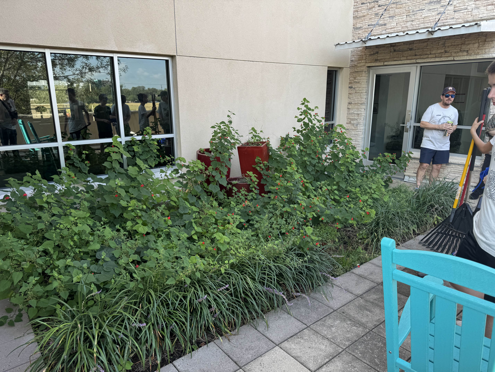
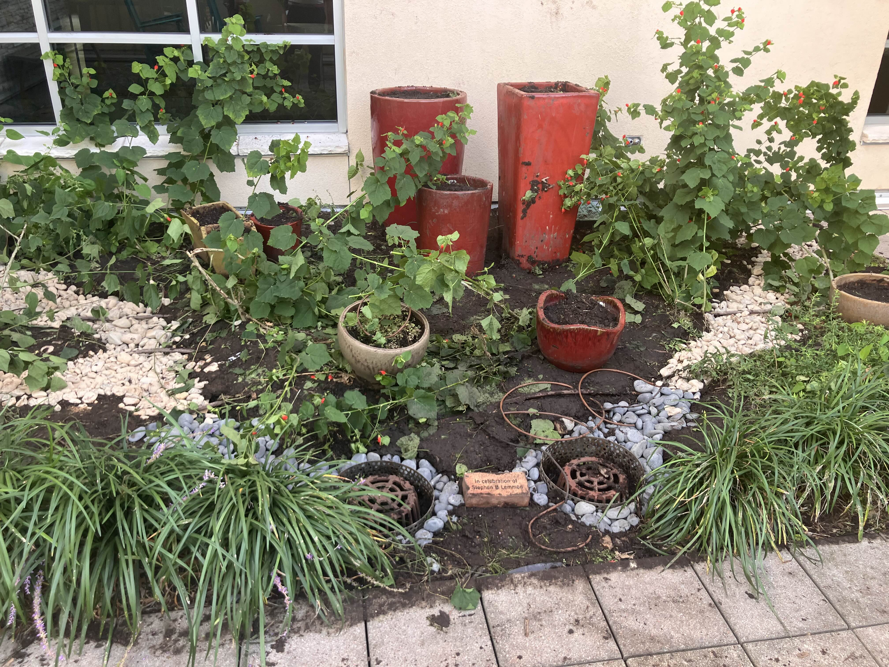

Here in Troop 49, we like to help out our community by doing service projects for organizations and others. One important part of being a scout is to do your best to help other people every day, and this is one way that we help give back to the community. If you know of a worthwhile community service that we could help with, feel free to tell us about it by pressing the button below.

